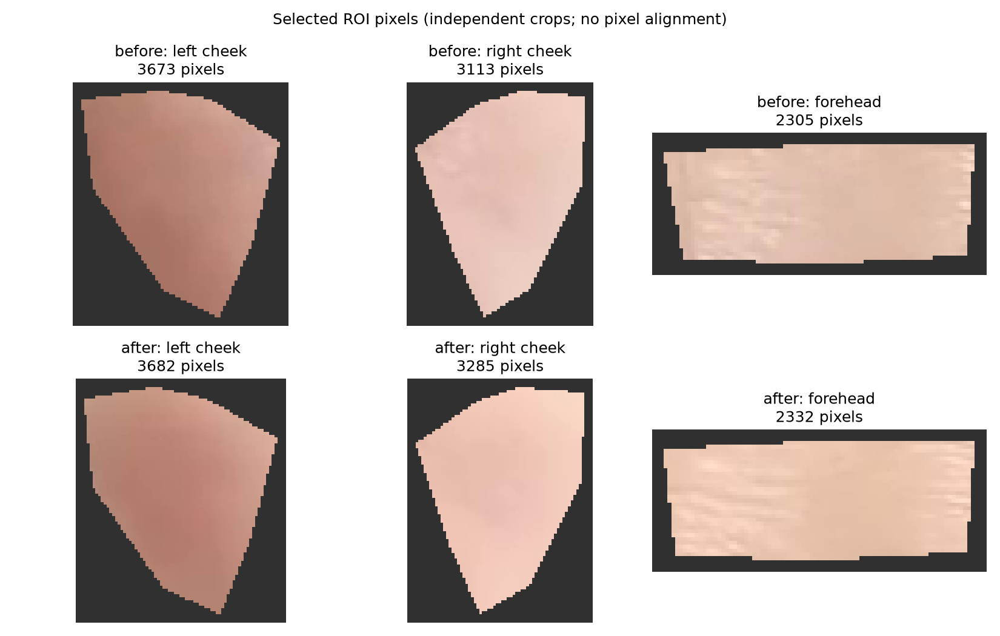
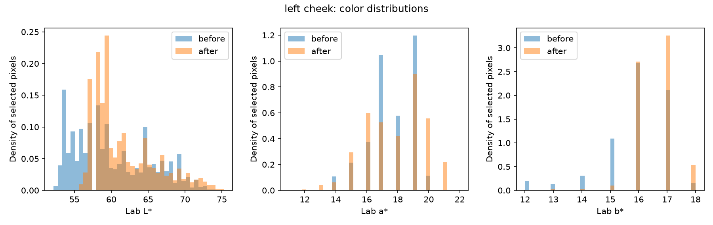
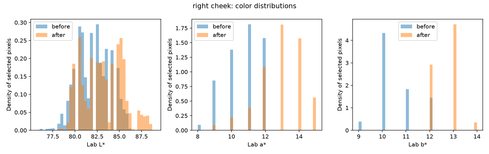
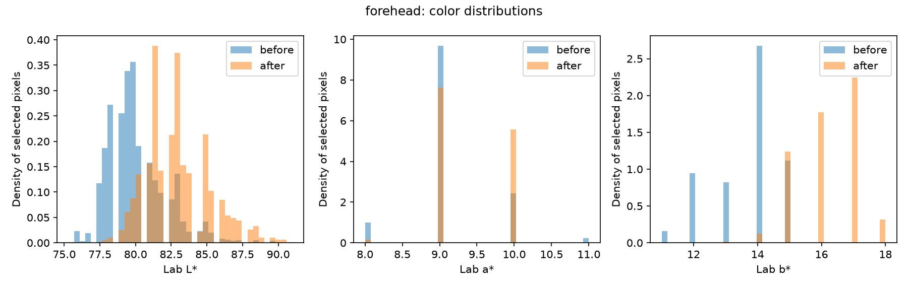

まず ROI が正しいか確認し、その後に a*（赤み）の変化を見ます。 これは美しさの点数でも、化粧効果を証明する指標でもありません。

| ROI | before平均 | after平均 | Δ平均 | Δ平均−額Δ | 中央値 (Δ) | p95 | a*≥20画素率 |
|---|---|---|---|---|---|---|---|
| 画面左の頬 | 17.60 | 17.87 | 0.28 | 0.01 | 18.00 → 18.00 (0.0) | 19.00 → 21.00 | 3.1% → 21.5% |
| 画面右の頬 | 10.69 | 12.97 | 2.28 | 2.02 | 11.00 → 13.00 (2.0) | 12.00 → 15.00 | 0.0% → 0.0% |
Δ = after − before。p95 と a*≥20画素率は、ROI全体の平均では見えにくい 局所的な高a*画素の変化を見るための記述統計です。固定閾値20は妥当性を検証済みの判定基準ではありません。
| 指標 | before | after | Δ |
|---|---|---|---|
| L* 明るさ | 80.14 | 82.96 | 2.82 |
| a* 赤み | 9.14 | 9.41 | 0.27 |
| b* 黄み | 13.64 | 16.23 | 2.59 |
Forehead subtraction is unvalidated: (cheek after - cheek before) - (forehead after - forehead before). Forehead treatment, shadow, pose, and lighting changes can invalidate the control; these are descriptive color differences, not scores or evidence of cosmetic efficacy.



lab_deltas.csv / lab_stats.csv / analysis_summary.json
左右は解剖学的左右ではなく、画像・画面上の左右です。 ROI間のピクセル対応付けは行っていません。